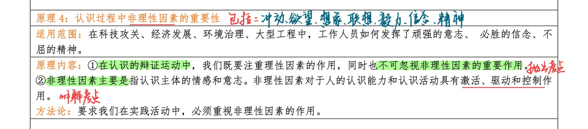
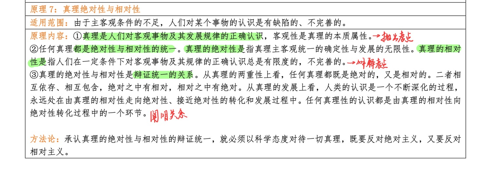

从哪里答：两问各扣一个原理，先亮原理再结合材料。第一问用“真理是绝对性与相对性的统一、认识是由相对真理走向绝对真理的无限过程”说明既有认识必然有局限、必须被质疑和推进；第二问用“非理性因素以情感意志为核心、对认识活动有激活驱动控制作用”说明好奇心与想象力的意义，最后补一句“非理性因素受理性因素主导、想象构建的方案要靠实践检验”，防止把想象力讲成万能。
结合材料回答问题：推动一系列科学革命发生的，往往不是既有知识的简单累积，而是对既有认识的质疑。很多关键性进展最初都来自一些看似“多余”的追问：为什么会这样？有没有别的可能？这些问题未必立刻有答案，却把研究一步步推向更深处。换句话说，好奇心是科学的起点。好奇心是在问“为什么是这样”'，想象力则在追问“为什么不能是那样”。如果说好奇心提出问题，想象力则为回答问题提供蓝图。科学并不是被动地等待现实自己开口。面对同样的事实，真正拉开人与人距离的，是有人能够在现有经验之外，再往前跨出一步，在头脑中构造出一种新的可能。没有这一步，很多科学史上的实破根本不会发生。伽利略以思想实验突破亚里士多德物理学的长期束缚。自由落体思想实验，成为广义相对论等效原理的思想雏形；斜坡滚球的思想实验，则揭示了惯性运动的基本规律，为牛顿第一定律英定基础。他不是靠“看见了什么新现象”才前进了一步，而是靠想象力，在头脑中先搭出一个情坑，再用逻辑把旧观念逼到矛盾之中。科学的想象力，很多时候就是这样工作的。它不是脱离现实的幻想，而是在现实还没有直接展开之前，先在思想中开辟一条路。这种以想象构建理想场景进行严谨的逻辑推演，成为现代科学研究的重要范式。爱因斯坦16岁时反复想过一个问题：如果我追着一束光一起跑，会看到什么？按经典物理学，这束光在他眼里似乎应该“静止”下来；可麦克斯韦方程又不允许出现这种情况。这便是他提出狭义相对论的起点。1907年，爱因斯坦又拓展了他的想象力：一个人在密用房间里，究竟怎么区分自己是站在地球上，还是在太空中被加速“往上推”？这便是等效性原理的引子，成为广义相对论的关键入口。摘编自《人民日报》（2026年3月27日）（1）从真理的绝对性和相对性辩证关系的视角看，为什么需要“对既有认识的质疑”？（2）说明认识活动中非理性因素对科学创新有何重要意义。


从哪里答：第一问从“发展不平衡不充分”这一主要矛盾切入，讲清协调发展是新发展理念的重要内容、共同富裕和中国式现代化的必然要求；第二问分两层答，党的政治优势落在总揽全局协调各方、党中央集中统一领导、全国一盘棋，制度优势落在共同富裕方向、集中力量办大事、先富带后富，最后用东西部协作的成效作证。
结合材料回答问题：材料1新时代以来，随着我国社会主要矛盾发生历史性变化，我图经济发展的空向结构发生深刻变化，中心城市和城市群正在成为承栽发展要素的主要空间形式。习近平总书记粉准把握我国社会主要矛盾变化在空间维度的集中反映，创造性地将区域协调发展作为破解发展不平衡不充分问题的童要抓手，亲自谋划、亲自部署、亲自推动京津冀协同发展、长江经济带发胶、粤港澳大湾区建设、长三角一体化发展、黄河流域生态保护和高质量发展等重大战略实施，推动海南自由贸易港全岛封关运行，一以贯之推进实施东部率先发展、中部崛起、西部大开发、东北全面振兴战略，引领我国区域协调发展取得历史性成就。摘编自《人民日报》（2026年2月24日）材料2开展东西部协作，是党中央着眼推动区域协调发展、促进共同富裕作出的重大决策。习近平总书记对常态化做好东西部协作工作作出重要指示强调，“东西部协作开展30年来，在助力脱贫攻坚、促进区域协调发展等方面发挥了重要作用，彰显了我们党的政治优势和我国社会主义制度的优越性”。这一重要指示指明了东西部协作的重要意义和价值取向，为常态化做好东西部协作工作提供了根本遵循。新征程上，必须深入学习贯彻习近平总书记对常态化做好东西部协作工作的重要指示精神，不断提升协作质效，实现互利共赢、共同发展。摘编自《光明日报》（2026年9月9日）（1）为什么要促进区域协调发展？（2）东西部协作如何“彰显了我们党的政治优势和我国社会主义制度的优越性”？
(1)区域协调发展是中国式现代化的内在要求。
第一，以新发展理念为指引，通过区域协调发展破解发展失衡难题。协调发展是新发展理念这一有机整体的重要组成部分。区域协调发展作为协调发展理念在国土空间维度的集中体现，其成效直接关乎新发展理念能否真正落地、发展质量能否达标。
第二，锚定新发展格局的战略需求，通过区域协调发展优化经济空间布局、畅通国民经济循环。构建新发展格局的关键在于经济循环的畅通无阻，要求打破生产、分配、流通、消费各环节的堵点。区域协调发展能够为加快构建新发展格局提供组织基础和运行保障。
第三，聚焦高质量发展这个主题，通过区域协调发展推动发展方式转型、培育新质生产力。推动高质量发展是“十五五”时期经济社会发展的主题，区域协调发展是高质量发展的内在要求。
第四，紧扣共同富裕的价值目标，通过区域协调发展促进发展成果共享、扎实迈向全体人民共同富裕。全体人民共同富裕是中国式现代化的本质特征，区域协调发展是实现共同富裕的必然要求。
(2)党的领导是东西部协作最根本的政治保障和最显著的政治优势，确保工作始终沿着正确的方向前进。党的政治引领指明方向目标任务，强大的组织优势和工作体系统筹调配各方面资源人才，践行群众路线确保成果惠及群众，助推西部地区高质量发展。
制度优势是一个国家的最大优势。东西部协作取得显著成效，充分彰显了中国特色社会主义制度具有显著优势，是把我国制度优势更好转化为国家治理效能的生动体现。东西部协作作为一项长期的制度性安排，通过机制化措施推进跨省域协作，集中体现了中国特色社会主义制度坚持全国一盘棋和集中力量办大事的制度优势。只有在中国特色社会主义制度条件下，才能够突破不同地区、不同发展阶段的限制，发挥集中力量办大事的优势，通过集中人力、物力、财力，在短时间内解决关键问题，为西部地区的长远发展提供有力支撑。
注：分析题讲义未覆盖，答题点据课程与材料自拟
从哪里答：第一问沿“伟大的工程”这条线索，说明延安作风的实质是理论联系实际、密切联系群众、批评与自我批评，与国民党奢侈浮华、脱离群众的西安作风形成对比，作风问题本质是党性问题、关系人心向背和党的生死存亡；第二问从理论地位（“十四个坚持”的科学内涵）、政治意义（全面从严治党、自我革命）、实践要求（攻坚战持久战）三层作答。
结合材料回答问题：材料1一百多年来，我们党从小到大、由弱到强，从最初50多名党员发展为拥有1亿多名党员的世界第一大执政党；从小小红船到领航“中国号”的巍巍巨轮，党的建设一以贯之、与时俱进。革命战争年代，1927年三湾改编，将党的支部建在连上。1929年古田会议，确立思想建党、政治建军的原则。1939年，毛泽东同志提出党的建设“伟大的工程”这一重大命题。新中国初期，中共中央即决定成立中央及各级党的纪律检查委员会，严厉惩处党内腐败分子。党的十一届三中全会后，提出“执政党应该是一个什么样的党，执政党的党员应该怎样才合格，党怎样才叫善于领导”的重大问题。1994年，党的十四届四中全会提出党的建设“新的伟大的工程”。将全面从严治党纳入“四个全面”战略布局，深入推进新时代党的建设新的伟大工程。光的十八大以来，以习近平同志为核心的党中央围绕建设什么样的长期执政的马克思主义政光、怎样建设长期执政的马克思主义政党的重大时代课题，提出一系列新理念新思想新战略，形成习近平觉建思想，为加强新时代党的建设提供了极本遵循。摘编自《光明日报》（2026年7月1日）材料2“用延安作风打败西安作风”一语，出自延安时期毛泽东同志与党内同志的一场经典谈话。1940年秋，延安马列学院特地安排邓力群等四位同志前往杨家冷迎接毛泽东同志来作报告。毛泽东同志得知来意之后摇摇手说：“我们是共产党人…•就万万不能沾染官條习气……我们要养成一种新的风气，延安作风。我们要用延安作风打败西安作风。在毛泽东同志的谈话中，“延安作风”是指清正康洁、密切联系群众、理论联系实际等共产党作风，“西安作风”是指奢侈浮华、贪图享乐、脱离群众等国民党作风。摘编自《光明日报》（2025年7月7日）材料3坚持推进作风建设常态化长效化，是习近平党建思想“十四个坚持”的科学内涵之一。党的十八大以来，以习近平同志为核心的党中央高度重视，持续推进党的作风建设，在科学总结新时代作风建设实跟经验的基础上，进一步回答了新形势下党的作风建设抓什么、怎么抓的问题。深入学习贯彻习近平党建思想，必须深刻把握坚持推进作风建设常态化长效化的重要意义、理论内涵和实践路径，以永远在路上的坚韧和执着打好作风建设攻坚战、持久战，以作风建设新成效为强国建设、民族复兴伟业提供有力保障。摘编自《人民日报》（2026年9月16日）（1）联系觉的建设“伟大的工程”，说明“延安作风”为什…
(1)抗战时期，毛泽东把党的建设作为“伟大的工程”来实施，不仅重视党的思想建设、组织建设，而且十分重视党的作风建设，通过树立良好形象，大大提升了党的凝聚力、号召力和战斗力。延安时期是中国共产党优良作风培育形成的重要历史时期。在这个时期，毛泽东提出了“党的作风”这一概念，并以身作则，高度重视作风建设，始终保持马克思主义政党的先进性纯洁性，保持革命队伍旺盛的斗志和廉洁的作风，并在总结历史经验的基础上，形成了理论联系实际、密切联系群众、批评和自我批评三大优良作风，最终以“延安作风”打败了“西安作风”。这也充分说明，党的作风关系党的生死存亡。
(2)第一，这是由党的作风建设的重要性决定的。党的作风就是党的形象，关系人心向背，关系党的生死存亡。作风问题核心是党同人民群众的关系问题，作风建设常态化长效化是保持党同人民群众血肉联系的有效途径。坚持推进作风建设常态化长效化，不仅是密切党群干群关系，巩固党的执政基础，确保党始终同人民同呼吸、共命运、心连心的有效途径，而且是“十五五”时期以优良党风凝聚党心民心，为以中国式现代化全面推进强国建设、民族复兴伟业提供有力保障的必然要求。
第二，这是由作风建设的特点决定的。作风问题具有顽固性、反复性，作风建设常态化长效化是锲而不舍解决作风问题的实践需要。解决好作风问题，是中国共产党作为世界上最大的马克思主义执政党必须面对的重大课题，破解这一课题，是一个长期而艰巨的过程。常态化是支撑作风建设持续推进、走深走实的重要前提，长效化是推动作风建设成果长期保持、扩展升华的目标归宿。
注：分析题讲义未覆盖，答题点据课程与材料自拟
从哪里答：第一问抓住“核心价值观的生命力在于实践”，讲从思想认同到行为习惯的转化，用积分超市说明载体化、日常化、具体化；第二问从家庭是社会的细胞、家风是社会风气的组成部分入手，讲优良家风与社会主义核心价值观同源同向，在润物无声中滋养人心、浸润社会。
结合材料回答问题：材料1如何让社会主义核心价值观转化为人们的思想认同和行为习惯？2025年，西藏日喀则康马县在49个村建起“新时代文明实践积分超市”。村民参与村级事务、志愿服务、違守村规，都能赚积分，并用于兑换实实在在的生活用品—洗衣液、热水瓶、酥油茶壶等。这就好比设立一套“行为账户”，好习惯能“增值”，旧陋习会“扣分””。2025年，全县共攒下53289分，兑换了价值20.6万元的物品。和谐、敬业、诚信、友善等价值观念融入日常生活，刻进各族群众心里。社会主义核心价值观不断深入人心，中华民族共有精神家园必将生机勃勃、欣欣向荣。摘编自《人民日报》（2026年1月15日）71M材料2家风家救是一个家庭最宝贵的财富，家庭文明是社会文明的基石。“一纸书来只为墙，让他三尺又何妨？”安徽桐城文昌街道六尺巷社区党总支书记、居奔会主任张耘家庭把“礼让”“和汐贵”融入基层治理，续写百年家风的时代新篇。作为非迹“六尺巷传说”省级代表性传承人，张耘参与打进“六尺巷工作法”，化解邪里到纷近700件，组建志愿讲解服务队、开设公益小课堂，传播谈和礼让理念。夫妻二人诗书传家、笃学向善，常态化开展读书分享、亲子朗读活动，以书香涵养家风，带动邻里共建和睦文明社区。优良家风在传承中滋养人心、没润社会。山西太原杏花岭区实验幼儿园原国长中芸深耕幼教领城数十年，坚守诚信向善家训，积极投身公益服务。她制作公益微课超200期，惠及万名幼教工作者；组建志愿讲师团，开展公益宣讲90余场。在她的言传身教和丈夫的坚定支持下，女儿、女婿、外孙主动投身志愿服务，让善意代代相传。摘编自《人民日报》（2026年5月16日）（1）结合材料，说明社会主义核心价值观为什么必须融人社会生活才能真正发挥作用。（2）为什么要让优良家风“在传承中滋养人心、没润社会”？
(1)一种价值观要真正发挥作用，必须融入社会生活，让人们在实践中感知它、领悟它。这是因为，核心价值观的养成绝非一日之功。道不可坐论，德不能空谈。于实处用力，做到知行合一，核心价值观才能内化为人们的精神追求，外化为人们的自觉行动。材料中的“积分超市”之所以有效，正在于它把社会主义核心价值观的价值要求嵌人具体生活场景，使“和谐、敬业、诚信、友善”不再是口号，而是可感知的日常行动。这告诉我们，培育和弘扬社会主义核心价值观，要下好落细、落小、落实的功夫，坚持由易到难、由近及远，努力把核心价值观的要求变成日常的行为准则，使社会主义核心价值观成为一言一行的基本遵循。
(2)家风是指一个家庭或家族世代相传的风尚、作风，即一个家庭当中的风气。家风是社会风气的重要组成部分。良好的家风对家庭成员的个人修养产生着重要的作用，也对整个社会道德风尚的形成产生着重要的影响。当无数家庭的美好风尚汇聚在一起，便会成为推动整个社会向上向善、维护和谐稳定的深沉力量。
注：分析题讲义未覆盖，答题点据课程与材料自拟
从哪里答：第一问先正面界定真正多边主义的内涵（主权平等、协商一致、国际规则共同制定、全球事务共同治理），再逐一揭批“一国独霸”“几方共治”“集团政治”的实质是霸权主义、强权政治和阵营对抗；第二问讲四大赤字及其根源，说明四大倡议分别对应破解发展、安全、文明、治理难题，共同服务于建设更加美好的世界和构建人类命运共同体。
结合材料回答问题：材料1多边主义、对话协商是关键路径。少数国家主导国际事务是历史不公，一国独霸、几方共治、集团政治不是真正的多边主义。摘自习近平《共同倡导平等有序的世界多极化实现更加公正合理的全球治理一在“上海合作组织＋”会议上的讲话》材料2当前，世界百年变局加速演进，全球南方卓然壮大，世界多极化不可阻挡。与此同时，单边主义、强权政治逆流涌动，多边主义和国际秩序受到冲击，和平赤字、发展赤字、安全赤字、治理赤字有增无减。我提出全球发展倡议、全球安全倡议、全球文明倡议、全球治理倡议，就是为了破解这些赤字，推动建设一个更加美好的世那。金砖国家要坚定站在历史正确一边，勇做时代先锋，引领国际秩序朝着更加公正合理的方向发展，携手推动构建人类命运共同体。摘自习近平《共担时代责任勇做先锋力量—在金砖国家领导人第十八次会唔第一阶段会议的讲话》（1）为什么说“一国独霸、几方共治、集团政治不是真正的多边主义”？（2）如何理解“提出全球发展倡议、全球安全倡议、全球文明倡议、全球治理倡议”，就是为了“推动建设一个更加美好的世界”？
(1)当前，多边主义工具化、阵营化现象突出。一些国家假借多边主义名义，拼凑排他性小圈子，制造阵营对立，阻碍科技交流，推动“脱钩断链”,人为割裂国际社会。这类做法非但解决不了全球性难题，反而进一步扩大国际社会的分裂。
与基于“小图子”利益、“集团政治”和“本国优先”的伪多边主义相反，真正的多边主义，核心要义是指国际上的事由大家共同商量着办，世界前途命运由各国共同掌握。为此，必须重振联合国的权威与活力，充分发挥联合国在全球治理中的主渠道作用。统筹完善各类全球性、区域性多边机制，构建多元主体广泛参与、平等协商的治理格局，让多极化进程成为国际社会合力应对时代挑战、实现共同发展繁荣的历史进程。
(2)面对南北鸿沟持续拉大、联合国2030年可持续发展议程落实严重滞后，中国提出全球发展倡议，旨在推动共同发展事业。面对错综复杂的国际和地区形势及安全治理难题，特别是个别国家以损害别国安全为代价谋求自身绝对安全，中国提出全球安全倡议，旨在弥合和平赤字，破解安全困境。面对“文明冲突论”“制度对抗论”甚嚣尘上，一些国家挑动价值观对立，中国提出全球文明倡议，旨在推动不同文明交流互鉴。面对联合国和多边主义受到冲击、治理赤字持续扩大，中国提出全球治理倡议，旨在构建更加公正合理的全球治理体系，从完善治理机制层面对前三大全球倡议作出延伸和拓展。
作为系统性的中国方案，四大全球倡议各有侧重、并行不悖，分别从不同维度搭建起系统完备的行动框架，形成以发展促繁荣、以安全保稳定、以文明增互信、以治理求公正的有机整体。四大全球倡议共同指向一个持久和平、普遍安全、共同繁荣、开放包容、清洁美丽的世界，成为构建人类命运共同体的重要支撑。
注：分析题讲义未覆盖，答题点据课程与材料自拟